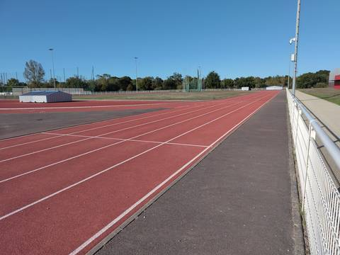
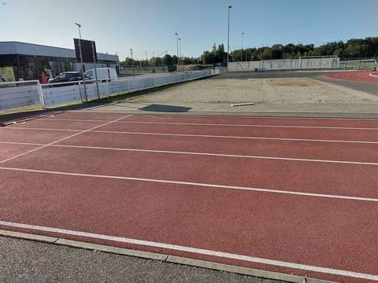
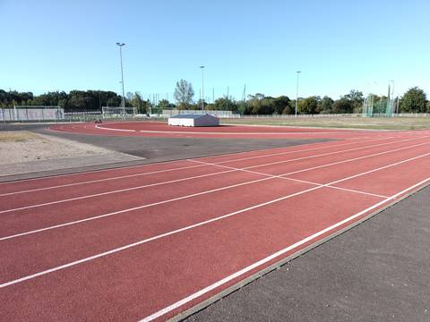

{kind=link}
{kind=link}
{kind=link}
La piste où je m'entraîne souvent, et celle du club, l'AR Sud Lac. Son seul défaut tient dans un chiffre : 250 m. On ne peut pas y courir un 100 m en ligne droite — on finit dans l'aire de saut à la perche — et le tour est déroutant quand on a l'habitude des 400 m. Pour tout le reste, c'est difficile à prendre en défaut : quatre couloirs en tartan, en libre accès, avec un équipement qu'on ne trouve pas souvent ouvert à tout le monde. Sautoirs de longueur et de triple, de hauteur, de perche, une belle aire de javelot, des aires de poids, une cage pour le marteau et le disque, et des mini-haies de steeple — sans rivière. Les salles voisines ont des vestiaires, et on peut facilement partir s'échauffer aux alentours. Pour un club ou pour une séance seul, c'est une chance ; il faut juste accepter de compter ses tours autrement.
Stade Muriel Hurtis — Complexe des Chevrets
Allée des Chevrets, 44310 Saint-Philbert-de-Grand-Lieu · Loire-Atlantique
Stade Muriel Hurtis — Complexe des Chevrets is an athletics venue in Saint-Philbert-de-Grand-Lieu (Loire-Atlantique), Pays de la Loire, France. It has a 250 m synthetic (tartan) running track with 4 lanes. It also offers steeplechase, long jump pit, triple jump, high jump area, pole vault, shot put, discus, hammer throw and javelin. The venue provides floodlighting, changing rooms and showers. Access is free and unrestricted.
Photos



Jump pits and throwing areas are what public data describes worst, and what gets photographed least. A close-up of the ground, a covered vault pit, a sand box gone to weeds: each adds what no field carries.
Send a photoNo GitHub account?Track
- Surface
- Synthetic (tartan)
- Lap length
- 250 m
- Track type
- Athletics stadium oval
- Lanes
- 4
- Setting
- Outdoor
- Opened
- 2014
Recorded facilities
- Steeplechase
- Long jump pit
- Triple jump
- High jump area
- Pole vault
- Shot put
- Discus
- Hammer throw
- Javelin
Access & amenities
- Free access
- Yes
- Floodlighting
- Yes
- Changing rooms
- Yes
- Showers
- Yes
- Toilets
- Yes
Accès libre constaté : on entre sur la piste sans portail ni créneau. Le ministère déclare vestiaires, douches et sanitaires sur le site ; en pratique ils sont dans les salles du complexe, à côté, et non au bord de la piste.
Athlete reviews
Visite du 5 septembre 2026, par quelqu'un qui s'y entraîne régulièrement. C'est la piste du club Athletic Retz Sud Lac. Le nom : la commune écrit « Le stade d'Athlétisme Muriel Hurtis » (stphilbert.fr, relevé le 5 septembre 2026), tandis que le recensement du ministère porte le nom de l'ensemble, « Complexe Sportif des Chevrets ». Le complexe regroupe aussi les salles Montreal, Tokyo, Athènes, Barcelone, Sydney et Mexico, deux terrains de football en herbe et un terrain synthétique. Le bâtiment visible depuis la piste porte le nom du stade de football voisin, Mickaël Landreau, à ne pas confondre avec la piste. Développement de 250 m relevé sur place, contre 200 m déclarés par le ministère ; le tracé OpenStreetMap mesure 247 m, ce qui va dans le même sens. Quatre couloirs, comptés sur place. Revêtement synthétique confirmé au pied, et non déduit de la couleur rouge — la commune voisine des Grenais montre à quoi ce piège ressemble. Conséquence directe des 250 m, et que rien d'autre ne dit : on ne peut pas courir un 100 m en ligne droite, la ligne se terminant dans l'aire de saut à la perche. Agrès vus sur place : sautoir de longueur et de triple, sautoir en hauteur, sautoir à la perche, aire de lancer du javelot, aires de lancer du poids, et une cage pour le marteau et le disque. Le steeple est inscrit parce que des mini-haies sont présentes, mais il n'y a pas de rivière : le parcours complet n'est pas praticable. Éclairage en service, non déclaré par le recensement. Les alentours se prêtent bien à l'échauffement en courant.
Other venues in the department
- Complexe sportif des Grenais
- Stade Municipal
- Complexe Sportif Hugues Martin
- Piste de Saint-Lumine-de-Coutais
- Espace Yannick Noah
- Piste de La Chevrolière
Official website of the venue · Report an error or complete this record
Réf. I441880016 · Source: Data ES + community — Data ES, French ministry for sport, Licence Ouverte 2.0. Records are self-declared and may be incomplete: check access conditions before travelling.